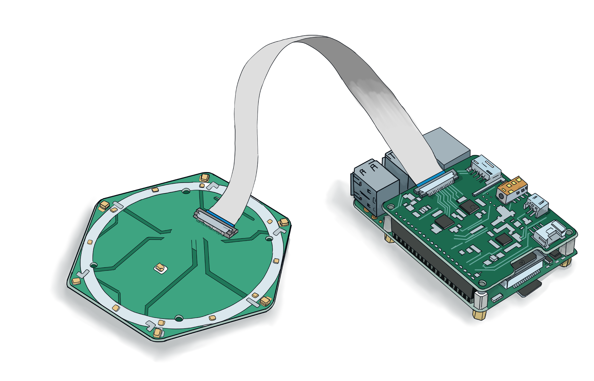
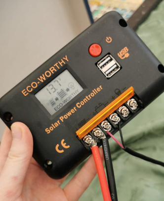
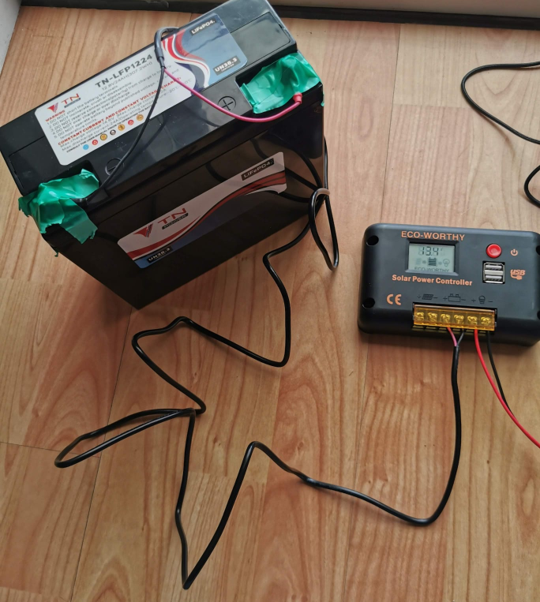
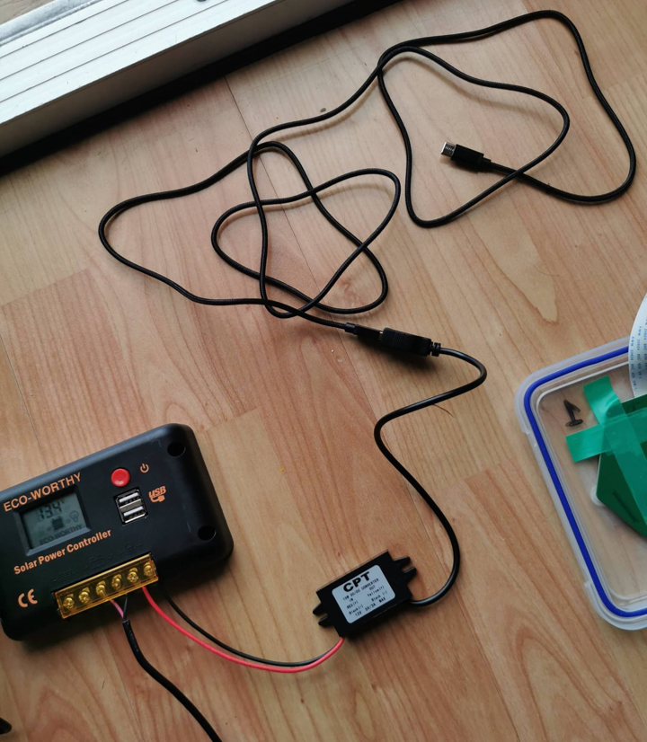
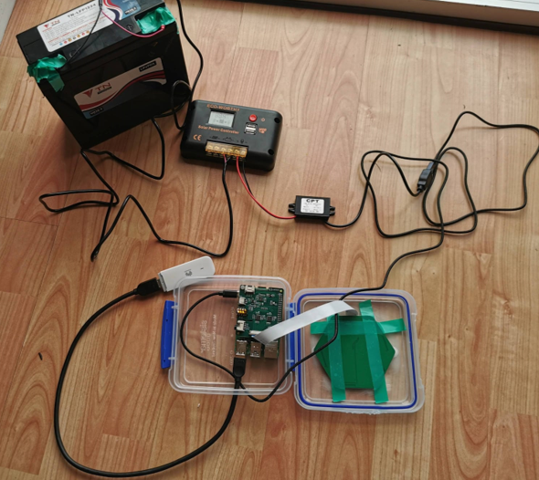
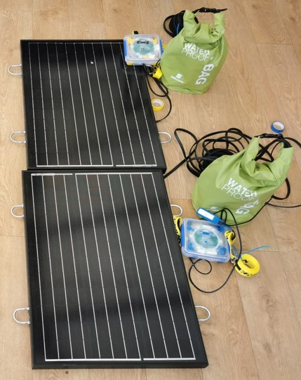
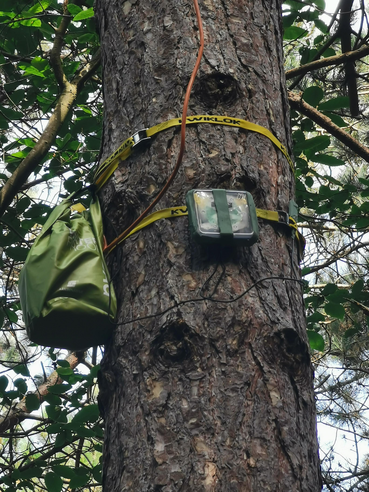
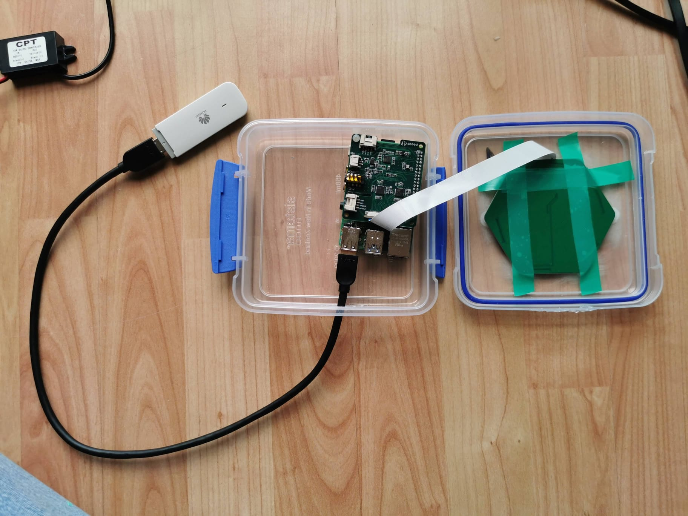
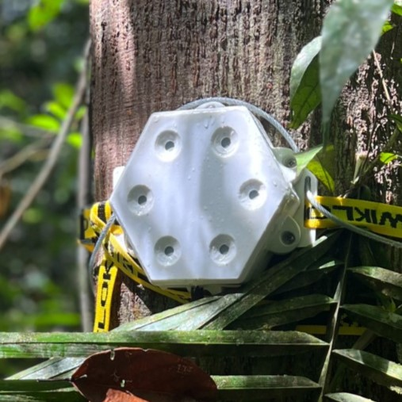

Building MAARU
MAARU recorders can be built cheaply and easily using just a power drill and a screwdriver. You’ll need to make sure you have all the kit first, so please see our non-exhaustive Kit List
The Basics:
The ReSpeaker 6-microphone array to the ReSpeaker HAT via the ribbon cable as above. Then, attach the HAT and the array to the Pi via the 40-pin header on your raspberry Pi.
Setting up the operating system
TIP: Power the Rpi from mains when you do this it’ll be a lot easier!- Set up the ReSpeaker 6-Mic hat. Full instructions on the ReSpeaker website. You’ll want to connect the circular array to the ReSpeaker HAT by the ribbon cable as below:
- Then attach the HAT to the Pi by the 40-pin header (don’t worry about affixing it all together with the white plastic screws. – you won’t need them).
- Insert the SIM card into the HUAWEI dongle
- Connect the dongle to the Raspberry Pi via the USB extension cable
Setting up the OS:
You’ll need Wi-Fi or network connection to get everything set up. If you’re looking to autonomise your device by connecting it to mobile networks, you can set that up now:
- Pay for a network subscription and activate your SIM card. SIM card activation usually involves making a phone call from your phone with the SIM inserted but can vary network-to-network. Make sure you can connect to the internet via the SIM on your phone first
- Put the SIM into the USB dongle.
- Plug the USB dongle into the raspberry pi.
There are two options for setting up the operating system. 1) you can download our prebuilt OS here [link] on to a micro-SD card or 2) follow instructions to set it up yourself here.
Once you've set up the operating system to a micro-SD, insert the micro-SD into your Raspberry Pi. You'll want to check that everything is working okay, so plug the Raspberry Pi into a screen and turn it on. It should pop up with information about the recording, compression, and transmission status of the audio. If it's all working fine you can power down safely, and you're ready to go. You can look at our suggested methods for weatherproofing (here) or you can look at autonomising the device with autonomous power and below.
TIP:Be careful not to suddenly unplug the raspberry Pi at any point. It’ll mess with the system. Instead, if you want to turn off the Pi:
- Press the button in the center of the array and wait for it to power down.
- Type “sudo halt” into the command line.
- Switch off the power source (wall plug or solar charge controller).
Powering:
Here we explain how to power your MAARU autonomously with solar power. If you have mains connection available you can just plug into the wall. Similarly solar panels can be subbed for wind or other renewable power sources.
If you don't want to power MAARU autonomously... you should plug your pre-charged battery into a solar charge controller. Or if you are chosing to use a power bank with inbuilt charge moderation, you can plug right into the Pi
For solar powered deployments...
| Connect the AWG10 cable to the solar panel. You can do this either by stripping and soldering this to the existing wire or by attaching the new cables directly to the panel (Keep note of the negative and positive terminals). | |
|  | Connect the solar panel to the solar charge controller by the AWG10 wire. Ensure you connect positive to positive and negative to negative. Left two terminals in the picture here. |
|  | Connect the Battery to the solar charge controller (middle two terminals). You can use the AWG10 for this or I’ve often just used the wires that came with the panel/ solar charge controller set. Again, ensure you connect positive to positive and negative to negative. Note: the solar panel isn’t attached here, but if for your field deployments make sure that it is. |
| Go through the settings on the Solar Charge Controller and make sure it all matches up to your battery. Especially: running voltage and battery type. This will maintain battery quality for longer | |
|  | Attach the 12V to 5V step-down to the power out terminus on the Solar Charge Controller. Ensure the terminals match up and that the 12V side is attached to the solar charge controller. Right two terminals here. Note: Depending on the type of step-down converter you have you may need a USBC adaptor. |
|  | Plug the power source into the Pi |
Setting up the Waterproofing:
Tip: Power down and unplug the device from the power source while you’re setting up the waterproofingRaspberry Pi and microphone array waterproofing.
We present here two different methods of weatherproofing for MAARU, depending on whether or not you have access to a 3D Printer. For both, you’ll need acoustic weatherproof vents (details in kit list).
In both cases the described housing only covers the Raspberry Pi, and multichannel array. The battery and solar charge controller should be stored separately in a dri-bag to reduce interference.
|  |  |
 |
Drill a 1x3cm hole in the bottom of the box and 6+2 holes in the lid. The hole at the bottom of the main box will allow for power/data wires to exit the Tupperware. The 6 circular holes on top will line up with the MEMS microphones on the array while the 2 other holes will line up with two other protrusions on the surface of the array. Once all the holes have been made, sand down the edges and surrounding area to reduce risk of damage and increase surface area for adhesives to attach. Attach the IPRO vents to the mic hole and lay electric tape over the other two holes and cover with sealant. |
|  | Put the raspberry Pi inside with the cables to the power source and the Huawei dongle coming out the bottom. Seal up the bottom with electric tape and clear sealant. |
 |
Put silica in the case and snap shut. Seal the edges with 2 layers of sniper tape. |
3D Printed Case
Details TBC
Kit List
This section contains the full component list, associated costs (prices rounded up and accurate as of August 2023), and purchase links. Note this has been setup for deployment in the UK and is not exhaustive of compatible elements. Other equipment with the same specification should work just as well.
MAARU can be deployed to suit different levels of required autonomy. Powering and Networking can be altered to suit local resource availibily
Core Device:
for all MAARU deployment types
| Item | Price | Links |
|---|---|---|
| Raspberry Pi 4 (4GB) | £55 | here |
| ReSpeaker 6-Mic Circular Array | £37 | here |
| High speed micro-SD card 256GB+ | £22 | here |
Weatherproofing, Teathering and Other
| Item | Price | Links |
|---|---|---|
| Waterproof container (sandwich box) | £2 | here |
| Acoustic Vents (x6) | £3/vent | here |
| Waterproof fabric tape | £18 | here |
| Electical insulation tape | £1 | here |
| Clear silicone sealant | £7 | here |
| Silica gel packets | 15p/packet | here |
Autonomous Powering (optional):
| Item | Price | Links |
|---|---|---|
| 60W 12V Solar Panel | £62 | here |
| 20A Solar charge controller | £11 | here |
| 12V 24Ah LiFEPO4 Deep cycle battery | £137 | here |
| 12V to 5V Step down converter | £10 | here |
| Armoured 2-core 13AWG power cable | £3/m | here |
| Teathering: slings (x4) | £6/sling | here |
| 10L Dry Bag | £8 | here |
Networking (optional):
| Item | Price | Links |
|---|---|---|
| 4GB USB Dongle | £40 | here |
| Unlimited data SIM card | £20/month | here |